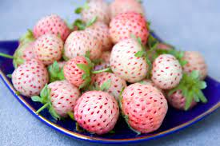

Pinberry Strawberries
Pineberry is a white strawberry cultivar with a pineapple-like flavor, and red seeds. Pineberry is a white strawberry cultivar with a pineapple-like flavor, and red seeds. Pineberry is a white strawberry cultivar with a pineapple-like flavor, and red seeds.
